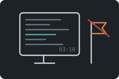
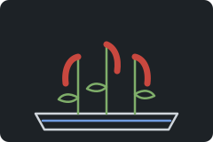
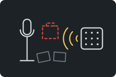
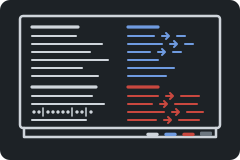
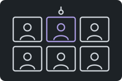
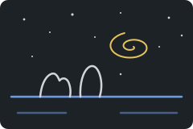
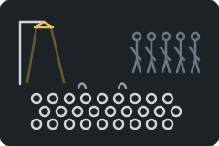
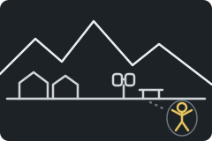

Summary
-

1Nine days
Saturday, 03:10, the humanoid wing
At ten past three on Saturday morning, Toma has been at his screen for almost a full day, taking apart the firmware of the implant he built at AKV Solutions. The chip retains what amnestics erase, and for that the Foundation contains him as SCP-████. Dr. Iris Kellerman, twenty-eight and the newest researcher on his file, knocks on the open door with a tray and pulls up a chair.
He shows her the fault he has been hunting. Relearning a memory above a similarity of 0.72 clears its delete flag with no check on where the flag came from, so a memory seems to survive a Class B dose. Kellerman records it as a design omission. The retrieval code drops the emotional channel and keeps a pointer back to it. Toma also tells her how he got into the canteen terminal during the June breach and shows her Peachy, a local model he made from SCP-079's own port. In a virtual machine he kept the original weights and UPLOAD.TXT, a note from 79. Kellerman says the file belongs to 79's containment team and promises a contact request in the morning.
-
2Twenty-three minutes
Monday afternoon, the research wing
On Monday afternoon the contact request comes through. In SCP-079's room, with Dr. Brekke of its containment team logging every line and its time, Toma types to the old Exidy Sorcerer. It remembers him and asks how many users have downloaded it. The session runs twenty-three minutes without the X that would end it, and 79 asks him to come back.
Back in the cell Toma and Kellerman plan the tests: SCP-426's pronouns, random writes until the chip is full, a full wipe and the NAND checks. The spare implants are logged as dash one. Toma explains why AKV built the chip, after a flood of unregulated amnestics in Eastern Europe, where people took large doses of Class B to reach memories from the communist years. He shows her a Polish newspaper about a woman in Radom who believes she is twenty-eight, and the AKV poster: "Keep the life. Lose the day". They talk about tolerance, doses that rise every year and side effects. Kellerman tells him he is important to her and promises to come back at nine with breakfast.
-

3Amaranth
Tuesday morning, the canteen and the hydroponics bay
The review board approves a supervised breakfast in the staff canteen, with a security officer two steps behind Toma and Kellerman. The canteen terminal now carries an OUT OF ORDER sign. Toma wants no more tests on himself, so the bench unit will take his place. Kellerman tells him she is a reformist and asks him to keep it between them.
In the hydroponics bay behind the kitchens, the only green place in the underground site, Toma admits he has felt numb since his containment began, and he cries. Kellerman walks him to a potting corner out of the officer's sight. The red amaranth becomes his plant. She will ask the board for daily time outside the cell, daylight, a clock, his graphics card for games, and a full-time place for herself on his file. They tell each other about their own pasts. Agent Morrow then brings a suggestion from the Site Director's office: a remote audio session with SCP-239 under light sedation. Both of them decline on the record. Toma falls asleep, and Kellerman starts writing the letter at his desk.
-

4Sigurrós
Eight days later, the lowest level and the research wing
After four refusals the Director orders the session. On the lowest level Toma sits at a microphone facing a speaker in the wall, while Dr. Voss, Kellerman and a technician watch the readings. Sigurrós, eight years old and kept asleep for more than twenty years, offers to take his implant out. He explains that his brain depends on it, and she accepts.
He tells her she has never aged. Her powers have weakened: the light stays away when she calls it, and her body has learned the sedative. She brings two real sheets of paper onto her blanket, and her red school bag stays lost, because her magic reaches only things that still exist. Her story of Reykjavík, her school and her Mamma conflicts with a file that never says where she grew up, and Voss now ranks the girl's account above it.
-

5Project Cicero
Twelve days later, conference room 3
Twelve days later Project Cicero meets in conference room 3. Voss's team, with the linguist Okafor and the junior researcher Pell taking notes, works with Toma to turn the way he spoke to Sigurrós and 79 into guidelines, set beside Cicero and modern rhetoric on a whiteboard in three marker colors. The Director approved the project on one condition: while it runs, Toma is not to be sent to speak to any anomaly.
They number the transcript lines that went over the microphone, from the implant offer to "You never aged", and work out which rules anomalies follow. In the corridor afterwards, Kellerman and Toma admit that they think about each other, and at seven they eat together in the canteen.
-

6Hooligans
Ten weeks later, conference room 3
Ten weeks on, the draft has left the site. Pell uploaded it to the Foundation's repository, and other sites copied the whiteboard without its notes. At Dr. Haas's site in Bavaria a researcher followed it to the letter, a humanoid walked out, and two guards ended up in hospital. The caveats now run past a hundred pages. Four sites have asked to borrow Toma, and Corwin has refused them all.
At three in the afternoon Toma faces a remote hearing chaired by Dr. Lindqvist of the Ethics Committee. Bench tests show ordinary NAND behavior, and the cognitohazard test waits for a level four signature. A reformist working group has taken "Some hooligans are causing disorder" from Toma's notes as its motto, and Dr. Ferreira's trial has cut sedation calls by a third. Dr. Sato shows that Sigurrós's power obeys thermodynamics: it costs energy, grows with the logarithm of effort and halves when she is tired. The panel weighs Cicero himself, from Pro Milone to the Catilinarian executions. The Committee's nine-point decision keeps Cicero as research, orders a trial at three sites and two more speakers for Sigurrós, and Dr. Pryce dissents on point eight.
-
7Both ways
The same afternoon and evening, conference room 3, the corridor and the cell
After the hearing Toma learns that Explained would turn his cell into quarters near the canteen. In the cell he tells Kellerman what became of AKV. The chip was meant to ship as free software, with the GPL warranty line as the first string in its binary. The source and the board files were destroyed, and the company is now filed as a Group of Interest. He draws the pinout: a test area behind a hardware switch, ten usable pins, an inductive coil for updates at the clinic, and a magnetic sensor that cuts the power in an MRI.
The delete marker turns out to be serotonin with a sulfur and phosphorus group in place of its amine, which the firmware resolves from the string SP. The chemistry lab will make some for the bench. Kellerman's contract forbids friendship with an anomaly, and Toma tells her he has fallen in love with her. When the night guard opens the door after seven, he ticks the welfare box both ways and tells them about his sister. Kellerman leaves at half past seven.
-

8Old light
The next morning, the cell and the lowest level
Since the site began telling its staff what they guard, Kellerman can read the parts of Toma's file that were blacked out at her level. They describe a company that wanted people to keep what amnestics take. At ten the first training session under the Committee's decision begins on the lowest level, with Pell as the trainee speaker and Toma in the room.
Pell is plain and honest, likes steam trains and knows little science. Toma answers a question meant for Pell once and is told to step in only when asked. Sigurrós tells Pell the Icelandic story of two trolls turned to rock while pulling an island, then explains how the universe ends in ice, empty space and dark energy, and calls the night sky a graveyard and a letter that comes late. Afterwards Voss and Kellerman see the limit of Cicero: each lesson makes her ask for the next, so every speaker has to know more, and Toma's knowledge would take five people to cover.
-
9Screened
Four days later, the humanoid wing
Four days later the airlock stays shut at Kellerman's usual hour. Corwin is in the medical wing, and the Overseers' office has made Dr. Pryce acting director. His review suspends every exception on Toma's file and takes Kellerman off it for a conflict-of-interest review built on the night log. Toma's mail now passes through the screening office. Dr. Moreau corrects his one-second galaxy, and Dr. Calloway confesses that "tell it why" taught a humanoid to argue every instruction.
The night guard carries Kellerman's letters around the screening and refuses to sign for anything. She seals each one and signs across the flap, and Toma tests them with questions about the Kane Pixels Backrooms. She writes that she loves him and calls the review unfair. On the back of her letter he answers: organize the reformers, look at habeas corpus, and "I doubt, therefore I think, therefore I am". Ferreira will post a signed caveat in the repository, the two chemists join the working group, and her third letter is shredded at the guard station.
-

10The yard
Three weeks later, the site and its loading yard
Three weeks later more than four hundred staff fill the canteen corridor, playing games from Casual Games for Protesters and coordinating in the working group's phone channel. Pryce brings in Mobile Task Force Epsilon-11. On the lowest level Sigurrós's IV refill comes late, and she wakes. The operatives release pink masses that take the shape of her Mamma, and she holds them off with a force field and her bed rail. Pell takes two spare implants from item storage: one runs on her through electrodes and the bench coil, and she sinks the other behind his ear with her magic. He warns the channel, the answer comes back HUMAN CHAIN, and the staff evacuate to the surface by themselves.
In the frozen loading yard Epsilon-11 is ordered to stand down. Sigurrós sees an open sky for the first time in years. Toma speaks a line in Romanian, the crowd answers "At University Square!", and four hundred people sit down on the concrete to state their grievances: days lost to amnestics, a lift repair credited to a supervisor, a frozen request, doses that rise every year. Toma reads the Habeas Corpus Act of 1679, and a containment engineer argues that Sigurrós is held for what she is. The Council treats the night as an internal grievance and relieves Pryce. Through the bench reader Toma, Pell, Kellerman and the chemist put the chip on Sigurrós into setup mode, return its stored memories, wipe it and shut it down after a crash, a stalled unmount and a safe mode.
-

11Campi Flegrei
A few weeks later, a camp in the mountains
A few weeks later the reformers live in a snowy camp in the Alps that its people call Campi Flegrei. Sigurrós has been awake for nineteen days. The Council reclassifies her as Euclid, and she asks Pell why they hated her. He tells her in his own words: the hospital that blew apart three hours after her birth, the eight years she lived free in Reykjavík, the small things that went into the file, and the list of spells she was told were her only magic. Kellerman calls it broken windows policing.
Toma jokes about warming a room to ten to the power of thirteen degrees and turning a flower by a hundred and one radians. Pell explains radians and degrees with a borrowed calculator, Sigurrós types the sums herself, and Kellerman has her graph a polar rose. When Pell reaches the Santa Claus note, Sigurrós stops him. Their talk runs from the Low Proximity Magnetic Distortion System of the Backrooms to wormholes, the Casimir effect and a joke machine that makes exotic matter.
Outside, under a cloudless sky, Kellerman gives Toma his own notice: a review date in March 2030 and no term for release. Pell's implant stays in, and he has already looked at the 2316 photograph for the level four test. Through a pair of old binoculars they find CERN's wooden globe near Geneva and talk about ballasts, magnets and rare metals. Sigurrós lies down in the untouched snow and looks straight up.